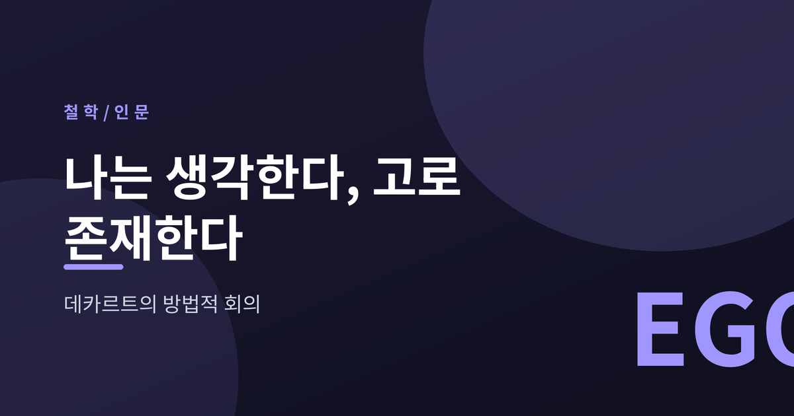
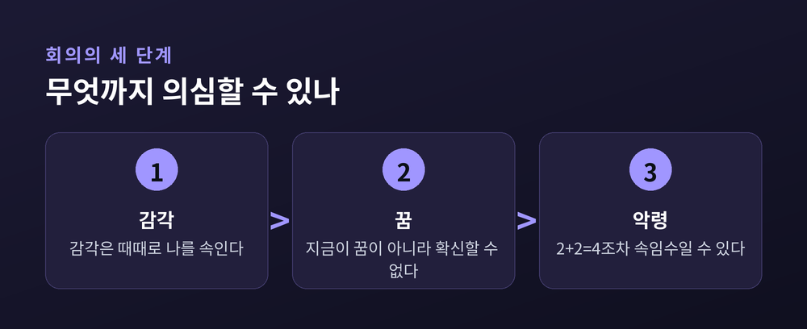
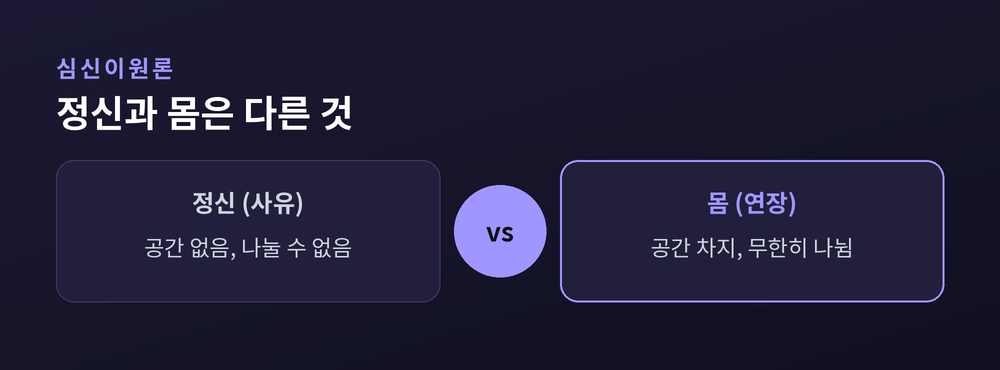
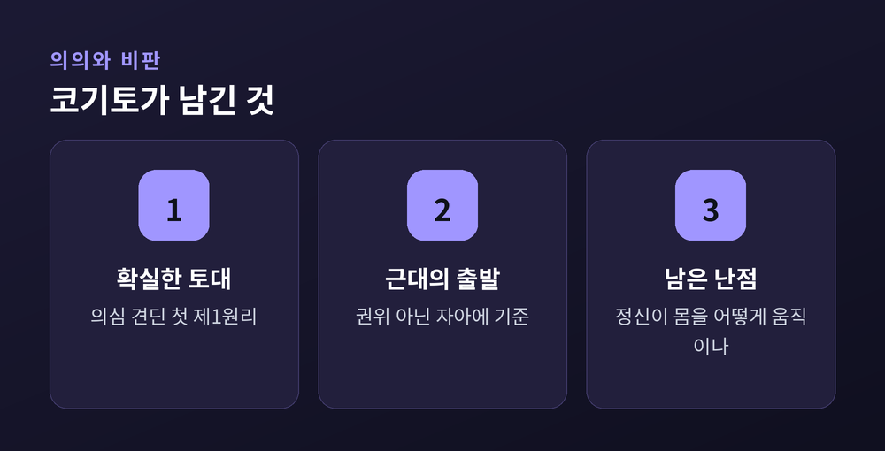

'나는 생각한다, 고로 존재한다'의 뜻

이번 글에서는 데카르트의 방법적 회의를 정리해 보겠습니다. 누구나 한 번쯤 들어본 "나는 생각한다, 고로 존재한다"가 정확히 무슨 뜻인지 차근차근 풀어보려 합니다. 어려운 용어는 최대한 덜어냈습니다.
방법적 회의는 모든 것을 의심하는 데서 출발합니다. 하지만 목적은 의심 그 자체가 아닙니다.
데카르트가 원한 것은 흔들리지 않는 지식의 토대였습니다. 그래서 조금이라도 의심할 여지가 있는 믿음은 일단 제쳐 둡니다. 그러고도 끝까지 남는 것이 있다면, 그것이야말로 확실한 출발점이라고 본 것입니다.
의심을 위한 의심을 하는 회의론과는 방향이 다릅니다. 그의 의심은 확실함을 찾기 위한 도구입니다. 무너뜨린 뒤 다시 세우기 위한 걸음인 셈입니다.

『성찰』에서 데카르트는 세 단계로 의심을 밀어붙입니다.
먼저 감각을 의심합니다. 멀리 있는 탑이 둥글게 보이듯, 감각은 종종 우리를 속입니다. 한 번이라도 속인 것은 온전히 믿기 어렵습니다.
다음은 꿈입니다. 지금 이 순간이 꿈이 아니라고 확신할 방법이 있을까요. 깨어 있음과 꿈을 확실히 가르는 표지는 없습니다.
마지막은 악령입니다. 전능하고 악의적인 존재가 나를 매 순간 속인다고 가정해 봅니다. 그렇다면 2 더하기 2는 4라는 사실조차 의심의 대상이 됩니다. 이렇게 상식을 넘어서까지 밀어붙인 의심을 과장된 의심이라 부릅니다.
여기서 반전이 옵니다. 악령이 아무리 나를 속여도 무너지지 않는 것이 하나 있습니다.
바로 '속고 있는 나'입니다. 속으려면 속는 누군가가 있어야 합니다. 존재하지 않는다면 의심조차 할 수 없습니다.
그래서 데카르트는 말합니다. "나는 생각한다, 그러므로 나는 존재한다." 의심하고 있다는 사실 자체가 내가 존재한다는 증거입니다.
한 가지만 짚겠습니다. 생각이 존재를 만들어낸다는 뜻이 아닙니다. "나는 존재한다"는 명제가, 내가 그것을 떠올리는 순간마다 반드시 참이 된다는 뜻입니다. 이것이 데카르트가 찾아낸 첫 번째 확실한 토대입니다.

확실한 것은 '생각하는 나'의 존재입니다. 그 나의 본질은 사유입니다.
여기서 데카르트는 한발 더 나아갑니다. 사유하는 정신과, 공간을 차지하는 몸을 서로 다른 것으로 봅니다. 정신은 나눌 수 없지만 몸은 무한히 나뉩니다. 이 대비가 둘이 다른 종류라는 근거가 됩니다. 이를 심신이원론이라 부릅니다.

이 구도는 근대 철학의 문을 열었다고 평가받습니다. 진리의 기준을 권위나 전통이 아니라, 의심하는 자기 자신에게 두었기 때문입니다.
물론 한계도 분명합니다. 비물질적 정신이 어떻게 물질적 몸을 움직이는지 설명하기 어렵습니다. 훗날 라일은 이를 "기계 속의 유령"이라 부르며 꼬집었습니다. 오늘날 심리철학은 대체로 다른 길을 걷습니다.
끝으로 한 마디만 더 드리겠습니다. 데카르트의 답이 옳으냐 그르냐를 떠나, 그가 던진 물음은 여전히 살아 있습니다.
— "무엇이든 의심할 수 있다면, 의심하는 나만은 의심할 수 없다."
모든 것이 흔들릴 때 무엇이 끝까지 남는지, 한 번쯤 스스로에게 물어보시면 좋겠습니다.